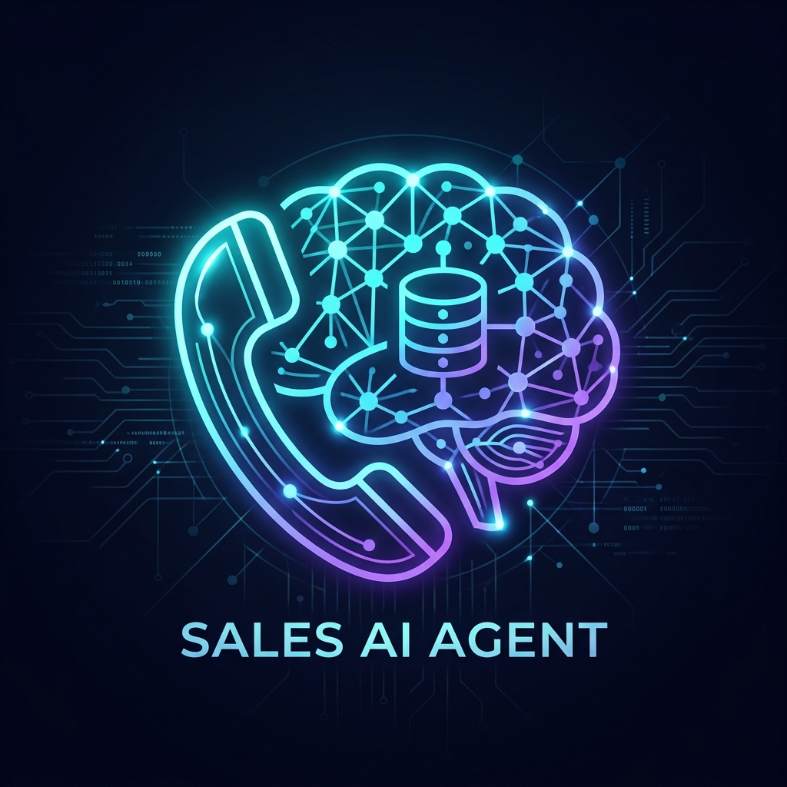
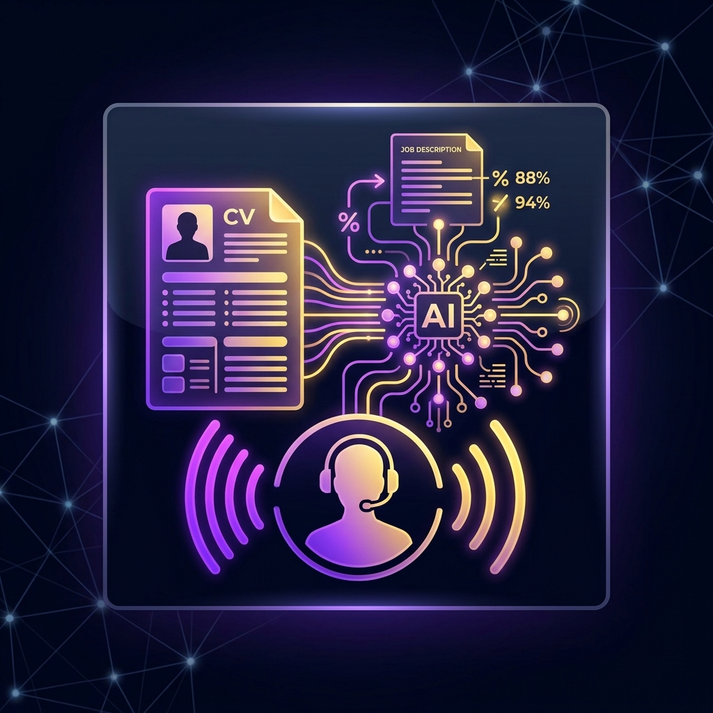
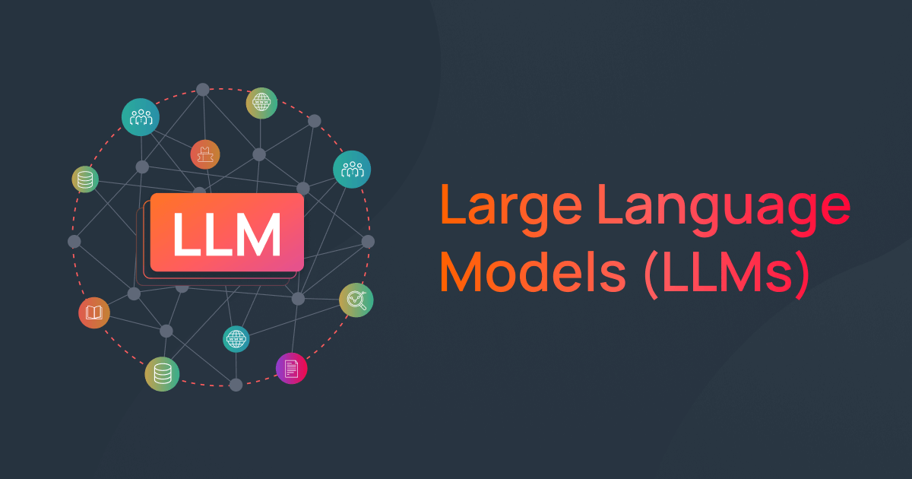
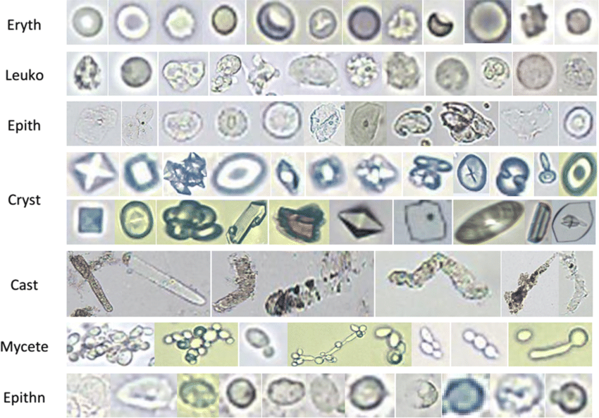
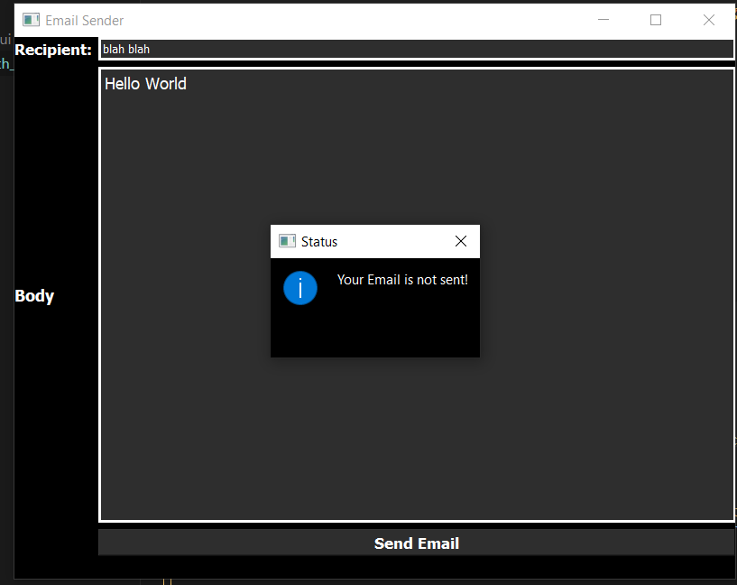
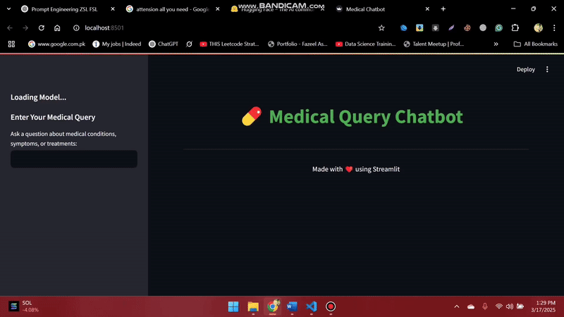
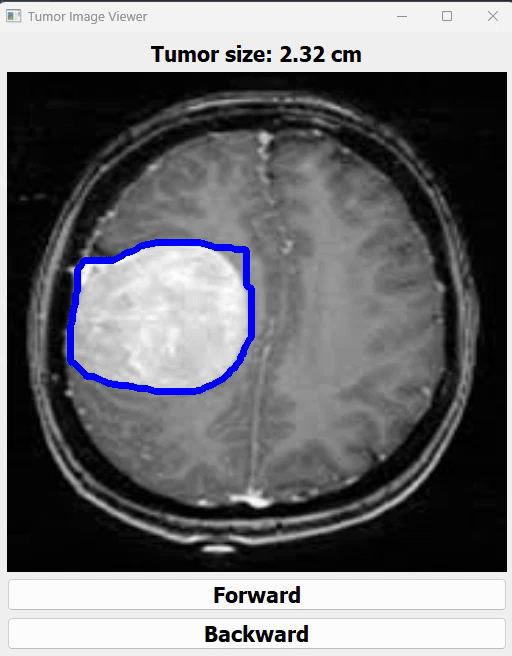

5+ years in applied machine learning, spending the last two taking production LLM systems from architecture to scale: low-latency SIP/VoIP voice agents, hybrid RAG platforms, and tool-using agentic workflows. Directing a 10-engineer AI team with strict evaluation, tracing, and p95 latency release gates under TCPA, PECR/GDPR, and HIPAA compliance.
Core Competencies
- Generative AI & LLMs
- Agentic AI & Voice AI (SIP/VoIP)
- Hybrid RAG & Reranking
- Computer Vision & MLOps
- Technical Leadership & Architecture
Professional Experience & Leadership
5+ years delivering production AI systems, leading engineering teams, and shipping compliant voice, RAG, and computer vision products across the US, UK, and Europe.
7 Kings Code LLC
Lead Role • CurrentLead AI Engineer
Lahore, Pakistan
- Real-Time AI Sales Calling Agent (aisaleagent.com): Architected and led delivery on Gemini Realtime over SIP/VoIP supporting 50+ languages, 100+ calls/day, 10+ CRM integrations, 7 VoIP providers, seamless barge-in handling, and p95 response latency of 200 to 300 ms. Sold as tiered SaaS plans to 10 enterprise clients.
- Adaptive Call Design & CRM Sync: Defined the end-to-end call architecture where the agent classifies each lead's industry, dynamically adapts the sales pitch, conducts the full multi-turn conversation, and writes transcripts and dispositions back to the CRM with per-client configurable campaigns.
- International Telephony Compliance: Drove regulatory compliance engineering (automated AI disclosure, opt-out handling, Do-Not-Call suppression, and recording consent) enabling unified deployment across TCPA (US) and PECR/GDPR (UK) jurisdictions.
- AI Recruitment Calling Agent (airecruitmentagent.com): Led the build of an autonomous recruitment voice agent integrated with 5+ CRMs and multiple ATS platforms. Pulls resumes, matches candidates to job descriptions, conducts screening and technical phone interviews, and advances shortlisted talent — cutting screening time by 40% across a 500-candidate batch.
- Jobsshopper AI Talent Platform (jobsshopper.com): Directed a 10-engineer team building a full-scale AI job portal featuring high-throughput CV parsing (1,000 CVs in under 5 minutes), automated JD generation, semantic CV-to-JD matching, shortlisting, and AI phone interviews.
- Enterprise Hybrid RAG Platform: Own the production RAG architecture over a continuously evolving knowledge base of 150+ documents (Pinecone, Chroma). Led the migration to hybrid dense + sparse retrieval with cross-encoder reranking, boosting answer accuracy by 70 to 80%. Enforced pre-release quality gates in LangSmith tracking hit rate and faithfulness.
- Calibrated Gaze-Estimation System (cortality.com): Led model training and precision calibration for a computer-vision gaze-estimation platform engineered for an international advertisement-testing research team.
- Engineering Governance & Observability: Own production tracing, latency monitoring, and release gates across all voice and LLM products; lead sprint planning, system architecture reviews, and code reviews.
7 Kings Code LLC
Promoted to LeadAI Engineer
Lahore, Pakistan
- Quadruped Robotics Conversational AI: Delivered a multi-session conversational voice agent with persistent session memory for the Unitree Go2 Pro quadruped robot, orchestrating natural human-robot interaction and physical task execution.
- GenAI Resume Parser & Support Triage Agents: Built the core GenAI resume parsing engine behind Jobsshopper, an autonomous email-triage agent that classifies message urgency and alerts support teams, and a multilingual support agent that automatically creates Freshdesk tickets via REST API.
- TrueDrive Cloud Platform: Engineered an internal Google Drive-style enterprise file storage and sharing platform utilizing Django REST Framework.
Grant Manpower Ltd
Full-TimeML Engineer
Lahore, Pakistan
- Multilingual Inbound Support Voice Agent: Owned end-to-end design and production delivery of an inbound technical-support voice agent operating in English, German, and Spanish. Handled 20 to 30 live calls per day with automated support ticket creation, resolving 50% of customer queries without human intervention at a 5–10 s average response latency.
- Omnichannel Support & Ticketing Workflow: Extended the multilingual conversational pipeline and automated ticket-generation architecture to a web-based text support chatbot.
University of the West of Scotland (UWS)
International ResearchResearch Associate, AI Engineer
Paisley, United Kingdom
- AI-Integrated Smart Wheelchair: Co-developed an assistive smart wheelchair (Safe-RH sub-initiative) combining autonomous obstacle perception with IoT vital-sign monitoring. Deployed YOLOv8n Lite on a Raspberry Pi integrated with an Arduino UNO and ultrasonic sensor array, achieving 95% mAP in real-time obstacle detection.
- Real-Time Clinical Telemetry Pipeline: Engineered the low-latency data pipeline streaming live patient vitals from embedded IoT biomedical sensors to a remote MySQL database for continuous clinical oversight by care staff.
Safe-RH (Erasmus+ EU Healthcare Project)
Full-TimeJunior AI Engineer
Bahawalpur, Pakistan
- Rural Health-Monitoring Platform (safe-rh-mis.com | safe-rh.eu): Built a scalable remote health-monitoring ecosystem for underserved rural clinics, integrating IoT medical devices and Raspberry Pi edge nodes with a centralized Django clinical portal for doctors and paramedics.
- Predictive Clinical Modeling: Trained and validated regression and classification models to flag cardiovascular disease and critical patient anomalies from live physiological data streams.
- Automated Urine-Sediment Microscopy (YOLOv8): Developed a deep learning computer vision pipeline to detect and classify urine-sediment particles, automating laboratory microscopy analysis with 90% mAP across 10,000 annotated images.
Islamia University Bahawalpur
Bachelor of Science in Information Technology (BS IT)
Bahawalpur, Pakistan
Final Year Project: Autonomous Small Vehicle Prototype with Raspberry Pi, OpenCV, Django/PostgreSQL & AWS Lambda.
Certifications & Endorsements
- Machine Learning Specialization — DeepLearning.AI
- AI Engineering Professional — Packt
- Machine Learning with Python — IBM
- Academic Reference: Dr. Naeem Ramzan, Professor at University of the West of Scotland (UWS)
Technical Arsenal & Core Competencies
Production-hardened stack spanning real-time telephony voice AI, hybrid RAG architectures, LLM observability & evaluation gates, scalable MLOps, and embedded computer vision.
LLMs & Agentic AI
Stateful Orchestration & Fine-TuningRAG & Vector Search
Hybrid Retrieval & Grounded GenerationVoice AI & Real-Time Telephony
Sub-300ms SIP/VoIP & ComplianceEval, Observability & Serving
Release Gates & High-Throughput InferenceMLOps, Cloud & Data
Containerized CI/CD & Distributed DataVision, Robotics & Backend
Microservices, Edge AI & LeadershipProduction Systems & Selected Projects
Flagship commercial AI platforms, low-latency voice agents, MLOps microservices, and computer vision systems.

Real-Time AI Sales Calling Agent
Production SIP/VoIP voice agent built on Gemini Realtime: 50+ languages, 100+ calls/day, 10+ CRM integrations, 7 VoIP providers, and barge-in handling. TCPA (US) & PECR/GDPR (UK) compliant; sold as tiered plans to 10 clients.

AI Recruitment Calling Agent
Connected to 5+ CRMs and multiple ATS platforms. Pulls resumes, semantically matches them to JDs, runs automated phone screening & technical interviews, and advances candidates — cutting screening time by 40% across a 500-candidate batch.

Jobsshopper — AI Recruitment & CV Platform
Directed 10 engineers delivering an end-to-end AI job portal with high-speed GenAI CV parsing (1,000 CVs in under 5 minutes), automated JD generation, semantic matching, automated shortlisting, and AI phone interviews.
Cortality — Calibrated Gaze-Estimation System
Led custom model training and multi-point spatial calibration for a precision gaze-estimation system built for an international advertisement-testing research team to track visual attention heatmaps.

Medical Consultation Voice Agent
Designed a grounded RAG pipeline over proprietary healthcare data with Whisper STT and Kokoro TTS running entirely locally, ensuring zero patient audio leaves the machine.

Automated Urine-Sediment Microscopy
Built a YOLOv8 detection and classification model trained on 10,000 clinical microscopy images (90% mAP) integrated with the Safe-RH rural telemedicine platform.

Vehicle Insurance Prediction (MLOps)
Containerized production ML microservice shipped through GitHub Actions CI/CD with MLflow experiment tracking, DVC data versioning, and AWS cloud deployment.

Weather Forecasting Service (MLOps)
End-to-end containerized forecasting microservice utilizing Docker, GitHub Actions CI/CD, MLflow, and DVC for reproducible model lineage and AWS cloud inference.

Small Autonomous Vehicle Prototype
Real-time obstacle detection, path planning, and GPS navigation powered by Raspberry Pi and OpenCV, paired with a Django/PostgreSQL control interface and AWS Lambda backend.

Email Triage & Ticket Resolution Agent
Autonomous support triage agent that classifies incoming email urgency, extracts structured entities, alerts on-call teams, and opens support tickets automatically.

Dynamic Hybrid RAG Knowledge Engine
Continuous knowledge ingestion and querying system using Pinecone/Chroma vector indices, hybrid retrieval, cross-encoder reranking, and LangSmith evaluation tracing.

Fine-Tuned Microsoft PHI — Healthcare LLM
Parameter-efficient fine-tuning (LoRA/QLoRA) of Microsoft PHI on clinical Q&A corpora for domain-grounded medical reasoning under low-VRAM inference constraints.

SignoraAI — Sign Language Recognition
Real-time sign language detection and gesture classification pipeline utilizing YOLOv8 and MediaPipe hand/pose landmarks for accessible communication.

Instruction-Tuned University Advisory LLM
Custom instruction-tuned GPT model calibrated on institutional catalogs and academic regulations for high-faithfulness student advisory responses.

MRI Brain Tumor Detection & Classification
Deep transfer learning pipeline for neurological MRI anomaly classification and region-of-interest localization.

High-Density Traffic & Crowd Tracking
Real-time multi-object detection and tracking pipelines using YOLOv8n and SORT/ByteTrack for highway vehicle telemetry and retail escalator footfall counting.